1 Βασικές τριγωνομετρικές εξισώσεις
1.1 Η Εξίσωση \(ημ x = \alpha\)
1.1.1 Θεωρία
Η εξίσωση \(ημ x = \alpha\) έχει λύση αν και μόνο αν \(|\alpha| \le 1\).
Αν \(\alpha = ημ \theta\), οι λύσεις της στο \(\mathbb{R}\) δίνονται από τους τύπους:
\[x = 2k\pi + \theta \quad \text{ή} \quad x = 2k\pi + \pi - \theta \quad (k \in \mathbb{Z})\]
1.1.2 Λυμένες Εφαρμογές
- Να λυθεί η εξίσωση
\(ημ x = \dfrac{\sqrt{2}}{2}\):
Λύση
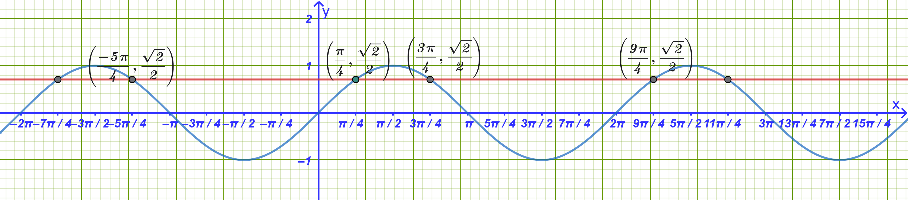
Η λύσεις είναι τα σημεία όπου η \(y=\dfrac{\sqrt{2}}{2}\) τέμνει την \(y= ημ x\).
Γνωρίζουμε ότι \(\dfrac{\sqrt{2}}{2} = ημ \dfrac{\pi}{4}\).
Η εξίσωση γίνεται \(ημ x = ημ \dfrac{\pi}{4}\), οπότε: \[x = 2k\pi + \dfrac{\pi}{4} \quad \text{ή} \quad x = 2k\pi + \pi - \frac{\pi}{4} = 2k\pi + \frac{3\pi}{4}, \quad k \in \mathbb{Z}\]
Πίνακας Λύσεων
| \(k \in \mathbb{Z}\) | \(x = 2k\pi + \dfrac{\pi}{4}\) | \(x = 2k\pi + \dfrac{3\pi}{4}\) |
|---|---|---|
| ……….. | ………… | ………….. |
| \(-2\) | \(\dfrac{-15\pi}{4}\) | \(\dfrac{-13\pi}{4}\) |
| \(-1\) | \(\dfrac{-7\pi}{4}\) | \(\dfrac{-5\pi}{4}\) |
| \(0\) | \(\dfrac{\pi}{4}\) | \(\dfrac{3\pi}{4}\) |
| \(1\) | \(\dfrac{9\pi}{4}\) | \(\dfrac{11\pi}{4}\) |
| \(2\) | \(\dfrac{17\pi}{4}\) | \(\dfrac{19\pi}{4}\) |
| ……….. | ………… | ………….. |
- Να λυθεί η εξίσωση
\(ημ x = -\dfrac{1}{2}\):
Λύση
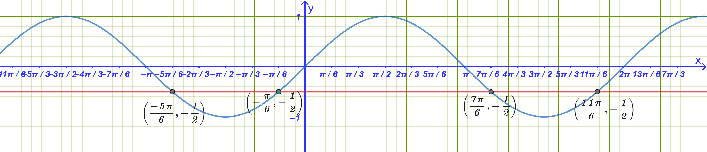
Γνωρίζουμε ότι \(-\dfrac{1}{2} = -ημ \dfrac{\pi}{6} = ημ\left(-\dfrac{\pi}{6}\right)\).
Η εξίσωση γίνεται \(ημ x = ημ\left(-\dfrac{\pi}{6}\right)\), οπότε: \[x = 2k\pi - \frac{\pi}{6} \quad \text{ή} \quad x = 2k\pi + \pi - \left(-\frac{\pi}{6}\right) = 2k\pi + \frac{7\pi}{6}, \quad k \in \mathbb{Z}\]
- Να λυθεί η εξίσωση
\(ημ\left(3x + \dfrac{\pi}{2}\right) = \dfrac{\sqrt{3}}{2}\):
Λύση
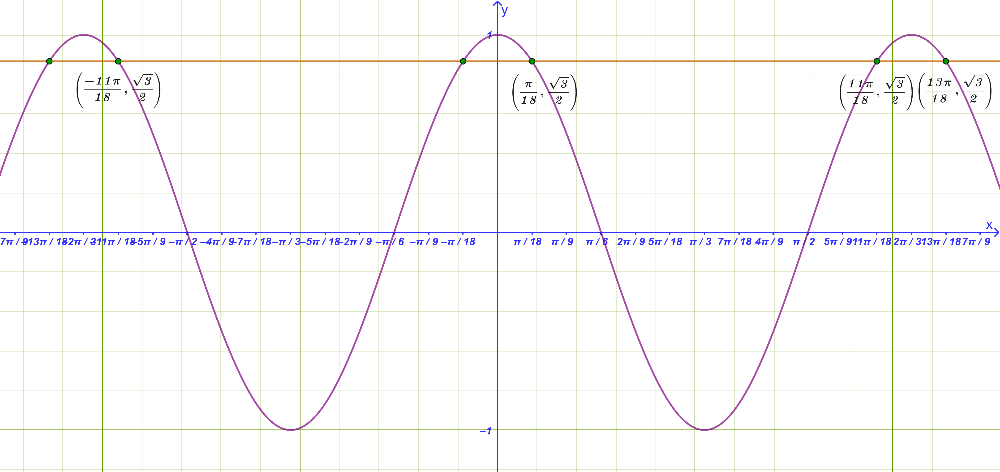
Γνωρίζουμε ότι \(\dfrac{\sqrt{3}}{2} = ημ \dfrac{\pi}{3}\).
Η εξίσωση γίνεται \(ημ\left(3x + \dfrac{\pi}{2}\right) = ημ \dfrac{\pi}{3}\), οπότε διακρίνουμε δύο περιπτώσεις:
1η περίπτωση: \(3x + \dfrac{\pi}{2} = 2k\pi + \dfrac{\pi}{3} \iff 3x = 2k\pi + \dfrac{\pi}{3} - \dfrac{\pi}{2} \iff 3x = 2k\pi - \dfrac{\pi}{6} \iff \mathbf{x = \dfrac{2k\pi}{3} - \dfrac{\pi}{18}}, \, k \in \mathbb{Z}\)
2η περίπτωση: \(3x + \dfrac{\pi}{2} = 2k\pi + \pi - \dfrac{\pi}{3} \iff 3x + \dfrac{\pi}{2} = 2k\pi + \dfrac{2\pi}{3} \iff 3x = 2k\pi + \dfrac{\pi}{6} \iff \mathbf{x = \dfrac{2k\pi}{3} + \dfrac{\pi}{18}}, \, k \in \mathbb{Z}\)
1.2 Η Εξίσωση \(συν x = \alpha\)
1.2.1 Θεωρία
Η εξίσωση \(συν x = \alpha\) έχει λύση αν και μόνο αν \(|\alpha| \le 1\).
Αν \(\alpha = συν \theta\), οι λύσεις της στο \(\mathbb{R}\) δίνονται από τον τύπο: \[x = 2k\pi \pm \theta \quad (k \in \mathbb{Z})\]
1.2.2 Λυμένες Εφαρμογές
- Να λυθεί η εξίσωση
\(συν x = -\dfrac{\sqrt{3}}{2}\):
Λύση
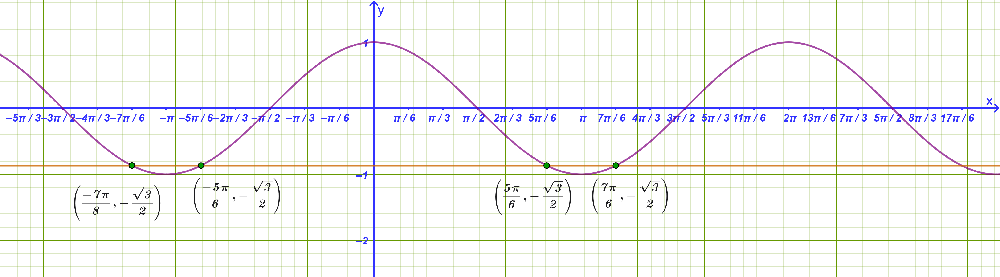
Γνωρίζουμε ότι \(-\dfrac{\sqrt{3}}{2} = -συν \dfrac{\pi}{6} = συν\left(\pi - \dfrac{\pi}{6}\right) = συν \dfrac{5\pi}{6}\).
Η εξίσωση γίνεται \(συν x = συν \dfrac{5\pi}{6}\), οπότε: \[\mathbf{x = 2k\pi \pm \frac{5\pi}{6}}, \quad k \in \mathbb{Z}\]
- Να λυθεί η εξίσωση
\(συν(2x) = -\dfrac{1}{2}\):
Λύση
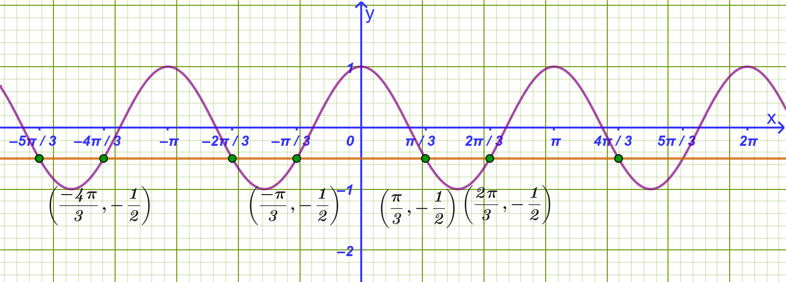
Γνωρίζουμε ότι \(-\dfrac{1}{2} = -συν \dfrac{\pi}{3} = συν\left(\pi - \dfrac{\pi}{3}\right) = συν \dfrac{2\pi}{3}\).
Η εξίσωση γίνεται \(συν(2x) = συν \dfrac{2\pi}{3}\), οπότε: \[2x = 2k\pi \pm \frac{2\pi}{3} \iff \mathbf{x = k\pi \pm \frac{\pi}{3}}, \quad k \in \mathbb{Z}\]
Πίνακας Λύσεων
| \(k \in \mathbb{Z}\) | \(\mathbf{x = k\pi + \dfrac{\pi}{3}}\) | \(\mathbf{x = k\pi - \dfrac{\pi}{3}}\) |
|---|---|---|
| ……….. | ………… | ………….. |
| \(-2\) | \(\dfrac{-5\pi}{3}\) | \(\dfrac{-7\pi}{3}\) |
| \(-1\) | \(\dfrac{-2\pi}{3}\) | \(\dfrac{-4\pi}{3}\) |
| \(0\) | \(\dfrac{\pi}{3}\) | \(\dfrac{-\pi}{3}\) |
| \(1\) | \(\dfrac{4\pi}{3}\) | \(\dfrac{2\pi}{3}\) |
| \(2\) | \(\dfrac{7\pi}{3}\) | \(\dfrac{5\pi}{3}\) |
| ……….. | ………… | ………….. |
- Να λυθεί η εξίσωση
\(συν\left(3x + \dfrac{\pi}{4}\right) = -\dfrac{\sqrt{2}}{2}\):
Λύση
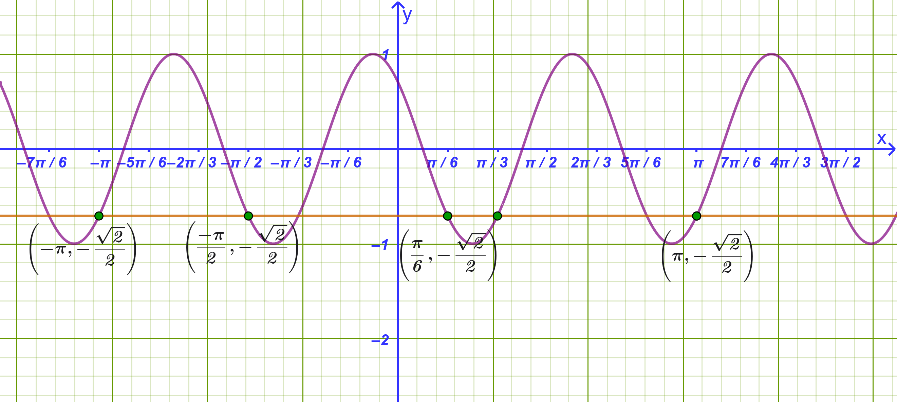
Γνωρίζουμε ότι \(-\dfrac{\sqrt{2}}{2} = -συν \dfrac{\pi}{4} = συν\left(\pi - \dfrac{\pi}{4}\right) = συν \dfrac{3\pi}{4}\).
Η εξίσωση γίνεται \(συν\left(3x + \dfrac{\pi}{4}\right) = συν \dfrac{3\pi}{4}\), οπότε:
Κλάδος (+): \(3x + \dfrac{\pi}{4} = 2k\pi + \dfrac{3\pi}{4} \iff 3x = 2k\pi + \dfrac{\pi}{2} \iff \mathbf{x = \dfrac{2k\pi}{3} + \dfrac{\pi}{6}}, \, k \in \mathbb{Z}\)
Κλάδος (-): \(3x + \dfrac{\pi}{4} = 2k\pi - \dfrac{3\pi}{4} \iff 3x = 2k\pi - \pi \iff \mathbf{x = \dfrac{2k\pi}{3} - \dfrac{\pi}{3}}, \, k \in \mathbb{Z}\)
1.3 Η Εξίσωση \(εφ x = \alpha\)
1.3.1 Θεωρία
Η εξίσωση \(εφ x = \alpha\) ορίζεται για \(x \neq k\pi + \dfrac{\pi}{2}\) και έχει πάντα λύσεις για κάθε \(\alpha \in \mathbb{R}\).
Αν \(\alpha = εφ \theta\), οι λύσεις της δίνονται από τον τύπο: \[x = k\pi + \theta \quad (k \in \mathbb{Z})\]
1.3.2 Λυμένες Εφαρμογές
- Να λυθεί η εξίσωση
\(εφ x = \dfrac{\sqrt{3}}{3}\):
Λύση
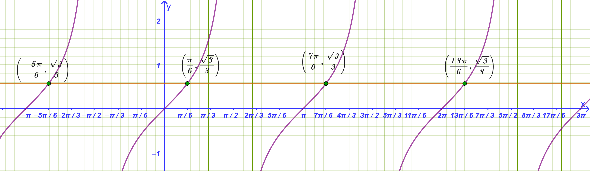
Γνωρίζουμε ότι \(\dfrac{\sqrt{3}}{3} = εφ \dfrac{\pi}{6}\).
Η εξίσωση γίνεται \(εφ x = εφ \dfrac{\pi}{6}\), οπότε: \[\mathbf{x = k\pi + \dfrac{\pi}{6}}, \quad k \in \mathbb{Z}\]
- Να λυθεί η εξίσωση
\(εφ(2x) = -1\):
Λύση
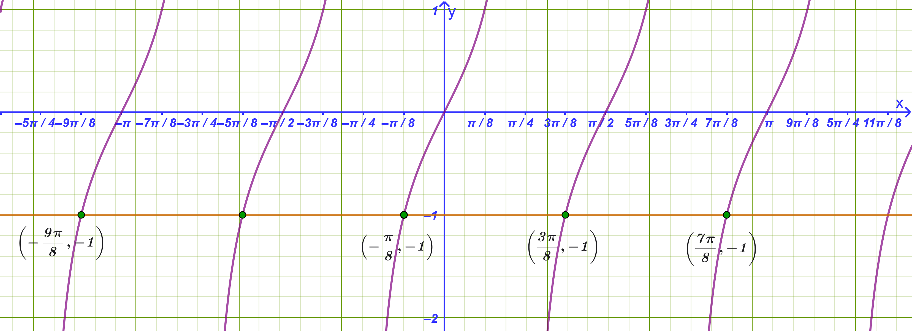
Πρέπει \(2x \neq k\pi + \dfrac{\pi}{2} \iff x \neq \dfrac{k\pi}{2} + \dfrac{\pi}{4}\).
Γνωρίζουμε ότι \(-1 = -εφ \dfrac{\pi}{4} = εφ\left(-\dfrac{\pi}{4}\right)\).
Η εξίσωση γίνεται \(εφ(2x) = εφ\left(-\dfrac{\pi}{4}\right)\), οπότε: \[2x = k\pi - \frac{\pi}{4} \iff \mathbf{x = \frac{k\pi}{2} - \frac{\pi}{8}}, \quad k \in \mathbb{Z}\]
- Να λυθεί η εξίσωση
\(εφ\left(x + \dfrac{\pi}{2}\right) = \sqrt{3}\):
Λύση
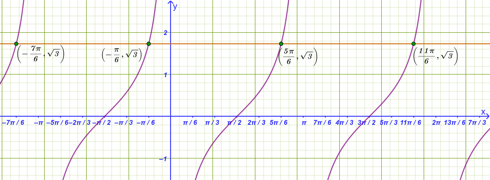
Πρέπει \(x + \dfrac{\pi}{2} \neq k\pi + \dfrac{\pi}{2} \iff x \neq k\pi\).
Γνωρίζουμε ότι \(\sqrt{3} = εφ \dfrac{\pi}{3}\).
Η εξίσωση γίνεται \(εφ\left(x + \dfrac{\pi}{2}\right) = εφ \dfrac{\pi}{3}\), οπότε: \[x + \frac{\pi}{2} = k\pi + \frac{\pi}{3} \iff x = k\pi + \frac{\pi}{3} - \frac{\pi}{2} \iff \mathbf{x = k\pi - \frac{\pi}{6}}, \quad k \in \mathbb{Z}\]
Πίνακας Λύσεων
| \(k \in \mathbb{Z}\) | \(\mathbf{x = k\pi - \dfrac{\pi}{6}}\) |
|---|---|
| ……….. | ………… |
| \(-2\) | \(\dfrac{-13\pi}{6}\) |
| \(-1\) | \(\dfrac{-7\pi}{6}\) |
| \(0\) | \(\dfrac{-\pi}{6}\) |
| \(1\) | \(\dfrac{5\pi}{6}\) |
| \(2\) | \(\dfrac{11\pi}{6}\) |
| ……….. | ………… |
1.4 Η Εξίσωση \(σφ x = \alpha\)
1.4.1 Θεωρία
Η εξίσωση \(σφ x = \alpha\) ορίζεται για \(x \neq k\pi\) και έχει πάντα λύσεις για κάθε \(\alpha \in \mathbb{R}\).
Αν \(\alpha = σφ \theta\), οι λύσεις της δίνονται από τον τύπο: \[x = k\pi + \theta \quad (k \in \mathbb{Z})\]
Για τον έλεγχο των αποτελεσμάτων σας και για να δείτε τις γραφικές παραστάσεις των ασκήσεων, μπορείτε να χρησιμοποιείτε το Geogebra online
1.4.2 Λυμένες Εφαρμογές
- Να λυθεί η εξίσωση
\(σφ x = \sqrt{3}\):
Λύση
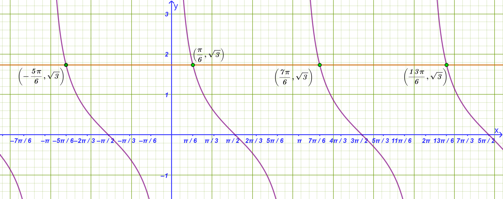
Γνωρίζουμε ότι \(\sqrt{3} = σφ \dfrac{\pi}{6}\).
Η εξίσωση γίνεται \(σφ x = σφ \dfrac{\pi}{6}\), οπότε: \[\mathbf{x = k\pi + \dfrac{\pi}{6}}, \quad k \in \mathbb{Z}\]
- Να λυθεί η εξίσωση
\(σφ(3x) = -1\):
Λύση
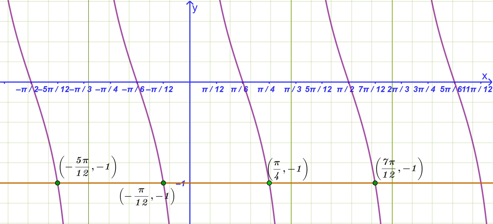
Πρέπει \(3x \neq k\pi \iff x \neq \dfrac{k\pi}{3}\).
Γνωρίζουμε ότι \(-1 = -σφ \dfrac{\pi}{4} = σφ\left(-\dfrac{\pi}{4}\right)\).
Η εξίσωση γίνεται \(σφ(3x) = σφ\left(-\dfrac{\pi}{4}\right)\), οπότε: \[3x = k\pi - \frac{\pi}{4} \iff \mathbf{x = \frac{k\pi}{3} - \frac{\pi}{12}}, \quad k \in \mathbb{Z}\]
- Να λυθεί η εξίσωση
\(σφ\left(2x + \dfrac{\pi}{6}\right) = \dfrac{\sqrt{3}}{3}\):
Λύση
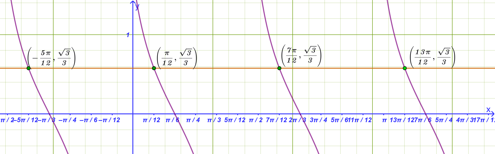
Πρέπει \(2x + \dfrac{\pi}{6} \neq k\pi \iff x \neq \dfrac{k\pi}{2} - \dfrac{\pi}{12}\).
Γνωρίζουμε ότι \(\dfrac{\sqrt{3}}{3} = σφ \dfrac{\pi}{3}\).
Η εξίσωση γίνεται \(σφ\left(2x + \dfrac{\pi}{6}\right) = σφ \dfrac{\pi}{3}\), οπότε: \[2x + \frac{\pi}{6} = k\pi + \frac{\pi}{3} \iff 2x = k\pi + \frac{\pi}{6} \iff \mathbf{x = \frac{k\pi}{2} + \frac{\pi}{12}}, \quad k \in \mathbb{Z}\]
1.5 Γενική Μεθοδολογία
Η επίλυση εξισώσεων με αντικατάσταση (ή με χρήση βοηθητικού αγνώστου) είναι μια βασική μεθοδολογία που απλοποιεί σύνθετες αλγεβρικές, πολυωνυμικές ή τριγωνομετρικές εξισώσεις, ανάγοντάς τες σε απλούστερες πολυωνυμικές εξισώσεις (συνήθως 2ου βαθμού).
4 Βήματα
Επιλογή Βοηθητικού Αγνώστου:
Εντοπίζουμε στην εξίσωση μια παράσταση, έναν όρο ή έναν τριγωνομετρικό αριθμό που εμφανίζεται επανειλημμένα και τον αντικαθιστούμε με μια νέα μεταβλητή (π.χ. \(t, y, \omega\)).
Καθορισμός Περιορισμών:
Ελέγχουμε αν η νέα μεταβλητή υπόκειται σε περιορισμούς. Για παράδειγμα:Αν \(t = ημ x\) ή \(t = συν x\), τότε πρέπει υποχρεωτικά \(|t| \le 1\).
Αν \(y = x^2\) ή \(y = \sqrt{P(x)}\), τότε πρέπει \(y \ge 0\).
Επίλυση της Επιλύουσας Εξίσωσης:
Σχηματίζουμε τη νέα εξίσωση ως προς τη βοηθητική μεταβλητή (η οποία ονομάζεται επιλύουσα εξίσωση) και υπολογίζουμε τις ρίζες της.
Επιστροφή στην Αρχική Μεταβλητή:
Απορρίπτουμε τις τιμές που δεν ικανοποιούν τους περιορισμούς. Για τις δεκτές τιμές, αντικαθιστούμε πίσω στην αρχική σχέση και λύνουμε τις βασικές εξισώσεις που προκύπτουν για τον αρχικό άγνωστο.
1.5.1 Αναλυτικό Παράδειγμα Εφαρμογής
Τριγωνομετρική Εξίσωση
Να λυθεί η εξίσωση:
\[4ημ^2 x - 2(1+\sqrt{2})ημ x + \sqrt{2} = 0\]
Λύση
Βήμα 1 & 2: Θέτουμε \(t = ημ x\) με τον περιορισμό \(|t| \le 1\).
Βήμα 3: Η εξίσωση μετασχηματίζεται στην επιλύουσα δευτεροβάθμια: \[4t^2 - 2(1+\sqrt{2})t + \sqrt{2} = 0\]
Υπολογίζοντας τις ρίζες της προκύπτουν: \[t_1 = \frac{1}{2} \quad \text{και} \quad t_2 = \frac{\sqrt{2}}{2}\]
Επειδή και οι δύο τιμές βρίσκονται στο διάστημα \([-1, 1]\), είναι δεκτές.
Βήμα 4: Επιστρέφουμε στο \(x\) και λύνουμε τις δύο θεμελιώδεις τριγωνομετρικές εξισώσεις:
Από \(t_1 = \dfrac{1}{2} \implies ημ x = \dfrac{1}{2} \iff x = 2k\pi + \dfrac{\pi}{6}\) ή \(x = (2k+1)\pi - \dfrac{\pi}{6}\), \(k \in \mathbb{Z}\).
Από \(t_2 = \dfrac{\sqrt{2}}{2} \implies ημ x = \dfrac{\sqrt{2}}{2} \iff x = 2k\pi + \dfrac{\pi}{4}\) ή \(x = (2k+1)\pi - \dfrac{\pi}{4}\), \(k \in \mathbb{Z}\).
1.6 Ασκήσεις για Εξάσκηση
1.6.1 Ομάδα Α: Εξισώσεις της μορφής \(ημ x = \alpha\)
Να λυθεί η εξίσωση: \(ημ x = \dfrac{1}{2}\)
Να λυθεί η εξίσωση: \(ημ x = -\dfrac{\sqrt{3}}{2}\)
Να λυθεί η εξίσωση: \(ημ(2x) = \dfrac{\sqrt{2}}{2}\)
Να λυθεί η εξίσωση: \(ημ\left(x - \dfrac{\pi}{3}\right) = -\dfrac{1}{2}\)
Να λυθεί η εξίσωση: \(ημ\left(4x + \dfrac{\pi}{6}\right) = \dfrac{\sqrt{3}}{2}\)
1.6.2 Ομάδα Β: Εξισώσεις της μορφής \(συν x = \alpha\)
Να λυθεί η εξίσωση: \(συν x = \dfrac{\sqrt{3}}{2}\)
Να λυθεί η εξίσωση: \(συν x = -\dfrac{\sqrt{2}}{2}\)
Να λυθεί η εξίσωση: \(συν(3x) = \dfrac{1}{2}\)
Να λυθεί η εξίσωση: \(συν\left(x + \dfrac{\pi}{6}\right) = -\dfrac{1}{2}\)
Να λυθεί η εξίσωση: \(συν\left(2x - \dfrac{\pi}{3}\right) = \dfrac{\sqrt{2}}{2}\)
1.6.3 Ομάδα Γ: Εξισώσεις της μορφής \(εφ x = \alpha\)
Να λυθεί η εξίσωση: \(εφ x = 1\)
Να λυθεί η εξίσωση: \(εφ x = -\sqrt{3}\)
Να λυθεί η εξίσωση: \(εφ(3x) = \dfrac{\sqrt{3}}{3}\)
Να λυθεί η εξίσωση: \(εφ\left(x - \dfrac{\pi}{4}\right) = -1\)
Να λυθεί η εξίσωση: \(εφ\left(2x + \dfrac{\pi}{3}\right) = \sqrt{3}\)
1.6.4 Ομάδα Δ: Εξισώσεις της μορφής \(σφ x = \alpha\)
Να λυθεί η εξίσωση: \(σφ x = 1\)
Να λυθεί η εξίσωση: \(σφ x = -\dfrac{\sqrt{3}}{3}\)
Να λυθεί η εξίσωση: \(σφ(2x) = \sqrt{3}\)
Να λυθεί η εξίσωση: \(σφ\left(x + \dfrac{\pi}{4}\right) = -1\)
Να λυθεί η εξίσωση: \(σφ\left(3x - \dfrac{\pi}{6}\right) = \dfrac{\sqrt{3}}{3}\)
- Εκφώνηση
Να βρείτε τη γενική λύση της εξίσωσης: \[ημ(\theta - 20^\circ) = συν(2\theta)\]
Λύση
Χρησιμοποιούμε τη σχέση συμπληρωματικών γωνιών για να μετατρέψουμε το συνημίτονο σε ημίτονο: \[συν(2\theta) = ημ(90^\circ - 2\theta)\]
Έτσι, η εξίσωση γίνεται: \[ημ(\theta - 20^\circ) = ημ(90^\circ - 2\theta)\]
Γνωρίζουμε ότι η βασική τριγωνομετρική εξίσωση \(ημ x = ημ \alpha\) έχει γενικές λύσεις (σε μοίρες): \[x = k \cdot 360^\circ + \alpha \quad \text{ή} \quad x = k \cdot 360^\circ + (180^\circ - \alpha), \quad k \in \mathbb{Z}\]
Εφαρμόζουμε τον κανόνα για τις δύο περιπτώσεις:
1η Περίπτωση:
\[\theta - 20^\circ = k \cdot 360^\circ + (90^\circ - 2\theta)\] \[\theta + 2\theta = k \cdot 360^\circ + 90^\circ + 20^\circ\] \[3\theta = k \cdot 360^\circ + 110^\circ\]
Διαιρούμε με το \(3\): \[\theta = k \cdot 120^\circ + \frac{110^\circ}{3}, \quad k \in \mathbb{Z}\]
(ή ισοδύναμα \(\theta = k \cdot 120^\circ + 36{,}67^\circ\))
2η Περίπτωση:
\[\theta - 20^\circ = k \cdot 360^\circ + [180^\circ - (90^\circ - 2\theta)]\] \[\theta - 20^\circ = k \cdot 360^\circ + 180^\circ - 90^\circ + 2\theta\] \[\theta - 20^\circ = k \cdot 360^\circ + 90^\circ + 2\theta\] \[\theta - 2\theta = k \cdot 360^\circ + 90^\circ + 20^\circ\] \[-\theta = k \cdot 360^\circ + 110^\circ\]
Πολλαπλασιάζουμε με \(-1\) (σημειώνεται ότι το \(-k\) παραμένει ακέραιος, οπότε μπορούμε να γράψουμε απλώς \(k \cdot 360^\circ\)): \[\theta = k \cdot 360^\circ - 110^\circ, \quad k \in \mathbb{Z}\]
(ή ισοδύναμα \(\theta = k \cdot 360^\circ + 250^\circ\), προσθέτοντας \(360^\circ\))
Τελική Απάντηση
Οι γενικές λύσεις της εξίσωσης είναι:
\[\theta = k \cdot 120^\circ + \frac{110^\circ}{3} \quad \text{ή} \quad \theta = k \cdot 360^\circ - 110^\circ, \quad k \in \mathbb{Z}\]
- Να βρείτε τη γενική λύση κάθε μιας από τις παρακάτω εξισώσεις
α) \(συν\alpha = 1\)
Λύση:
Το συνημίτονο ισούται με \(1\) στις ακέραιες πολλαπλάσιες περιόδους των \(360^\circ\): \[\alpha = k \cdot 360^\circ, \quad k \in \mathbb{Z}\]
β) \(4ημ\theta = 0\)
Λύση:
\[4ημ\theta = 0 \iff ημ\theta = 0\]Το ημίτονο μηδενίζεται σε κάθε πολλαπλάσιο των \(180^\circ\): \[\theta = k \cdot 180^\circ, \quad k \in \mathbb{Z}\]
γ) \(4συν\theta + 3 = 1\)
Λύση:
\[4συν\theta = 1 - 3 \iff 4συν\theta = -2 \iff συν\theta = -\frac{1}{2}\]Επειδή \(συν(60^\circ) = \dfrac{1}{2}\), έχουμε \(συν(180^\circ - 60^\circ) = συν(120^\circ) = -\dfrac{1}{2}\).
Επομένως: \[\theta = k \cdot 360^\circ \pm 120^\circ, \quad k \in \mathbb{Z}\]
δ) \(ημ(2\theta) = -\dfrac{\sqrt{3}}{2}\)
Λύση:
Γνωρίζουμε ότι \(ημ(60^\circ) = \dfrac{\sqrt{3}}{2}\), άρα \(-\dfrac{\sqrt{3}}{2} = ημ(-60^\circ)\).
Οι γενικές λύσεις για το ημίτονο είναι:\(2\theta = k \cdot 360^\circ - 60^\circ \implies \theta = k \cdot 180^\circ - 30^\circ, \quad k \in \mathbb{Z}\)
\(2\theta = k \cdot 360^\circ + (180^\circ - (-60^\circ)) = k \cdot 360^\circ + 240^\circ \implies \theta = k \cdot 180^\circ + 120^\circ, \quad k \in \mathbb{Z}\)
- Να βρείτε τη γενική λύση κάθε εξίσωσης
α) \(συν(\theta + 20^\circ) = 0\)
Λύση:
Το συνημίτονο μηδενίζεται στις θέσεις \(90^\circ + k \cdot 180^\circ\): \[\theta + 20^\circ = k \cdot 180^\circ + 90^\circ\] \[\theta = k \cdot 180^\circ + 70^\circ, \quad k \in \mathbb{Z}\]
β) \(ημ(3\alpha) = -1\)
Λύση:
Το ημίτονο γίνεται \(-1\) στο \(270^\circ\) (ή \(-90^\circ\)): \[3\alpha = k \cdot 360^\circ + 270^\circ\]
Διαιρούμε με το \(3\): \[\alpha = k \cdot 120^\circ + 90^\circ, \quad k \in \mathbb{Z}\]
γ) \(εφ(4\beta) = \sqrt{3}\)
Λύση:
Επειδή \(εφ 60^ο=\sqrt{3}\)
Η γενική λύση της εφαπτομένης είναι: \[4\beta = k \cdot 180^\circ + 60^\circ\]
Διαιρούμε με το \(4\): \[\beta = k \cdot 45^\circ + 15^\circ, \quad k \in \mathbb{Z}\]
δ) \(συν(\alpha - 25^\circ) = 0{,}707\)
Λύση:
Παρατηρούμε ότι \(0{,}707 \approx \dfrac{\sqrt{2}}{2} = συν(45^\circ)\).
Άρα: \[\alpha - 25^\circ = k \cdot 360^\circ \pm 45^\circ\]
Αν πάρουμε το \(+45^\circ\):
\[\alpha = k \cdot 360^\circ + 45^\circ + 25^\circ \implies \alpha = k \cdot 360^\circ + 70^\circ, \quad k \in \mathbb{Z}\]Αν πάρουμε το \(-45^\circ\):
\[\alpha = k \cdot 360^\circ - 45^\circ + 25^\circ \implies \alpha = k \cdot 360^\circ - 20^\circ, \quad k \in \mathbb{Z}\]
ε) \(2ημ\left(\dfrac{3\theta}{2}\right) = -1\)
Λύση:
\[ημ\left(\frac{3\theta}{2}\right) = -\frac{1}{2} = ημ(-30^\circ)\]
Έχουμε δύο περιπτώσεις:
\(\dfrac{3\theta}{2} = k \cdot 360^\circ - 30^\circ \implies 3\theta = k \cdot 720^\circ - 60^\circ \implies \theta = k \cdot 240^\circ - 20^\circ, \quad k \in \mathbb{Z}\)
\(\dfrac{3\theta}{2} = k \cdot 360^\circ + (180^\circ - (-30^\circ)) = k \cdot 360^\circ + 210^\circ\)
\[3\theta = k \cdot 720^\circ + 420^\circ \implies \theta = k \cdot 240^\circ + 140^\circ, \quad k \in \mathbb{Z}\]
στ) \(5εφ(\beta + 15^\circ) = \dfrac{5}{\sqrt{3}}\)
Λύση:
Διαιρούμε και τα δύο μέλη με το \(5\): \[εφ(\beta + 15^\circ) = \frac{1}{\sqrt{3}} = \frac{\sqrt{3}}{3}\]
Γνωρίζουμε ότι \(εφ(30^\circ) = \dfrac{1}{\sqrt{3}}\).
Επομένως: \[\beta + 15^\circ = k \cdot 180^\circ + 30^\circ\] \[\beta = k \cdot 180^\circ + 15^\circ, \quad k \in \mathbb{Z}\]
- Εύρεση του \(\alpha \in [0^\circ, 360^\circ]\)
Εκφώνηση:
Δίνεται η εξίσωση: \[\sqrt{3}\eta\mu^2\alpha - \eta\mu\alpha \cdot \sigma\upsilon\nu\alpha = 0, \quad \text{με } \alpha \in [0^\circ, 360^\circ]\]
Λύση
1: Παραγοντοποίηση
Βγάζουμε κοινό παράγοντα το \(\eta\mu\alpha\): \[\eta\mu\alpha \cdot (\sqrt{3}\eta\mu\alpha - \sigma\upsilon\nu\alpha) = 0\]
Αυτό σημαίνει ότι: \[\eta\mu\alpha = 0 \quad \text{ή} \quad \sqrt{3}\eta\mu\alpha - \sigma\upsilon\nu\alpha = 0\]
2: Διερεύνηση των περιπτώσεων
1η Περίπτωση: \(\eta\mu\alpha = 0\)
Στο διάστημα \([0^\circ, 360^\circ]\), το ημίτονο μηδενίζεται στις τιμές: \[\alpha = 0^\circ, \quad \alpha = 180^\circ, \quad \alpha = 360^\circ\]
2η Περίπτωση: \(\sqrt{3}\eta\mu\alpha - \sigma\upsilon\nu\alpha = 0\)
\[\sqrt{3}\eta\mu\alpha = \sigma\upsilon\nu\alpha\](Παρατηρούμε ότι αν \(\sigma\upsilon\nu\alpha = 0\), τότε αναγκαστικά \(\eta\mu\alpha = 0\), πράγμα αδύνατο αφού \(\eta\mu^2\alpha + \sigma\upsilon\nu^2\alpha = 1\). Άρα \(\sigma\upsilon\nu\alpha \ne 0\)).
Διαιρούμε και τα δύο μέλη με \(\sigma\upsilon\nu\alpha\): \[\sqrt{3} \cdot \frac{\eta\mu\alpha}{\sigma\upsilon\nu\alpha} = 1 \implies \sqrt{3}\epsilon\phi\alpha = 1 \implies \epsilon\phi\alpha = \frac{1}{\sqrt{3}} = \frac{\sqrt{3}}{3}\]
Γνωρίζουμε ότι η βασική οξεία γωνία είναι: \[\alpha = 30^\circ\]
Επειδή η εφαπτομένη είναι θετική στο 1ο και στο 3ο τεταρτημόριο, οι λύσεις στο διάστημα \([0^\circ, 360^\circ]\) είναι:
1ο τεταρτημόριο: \(\alpha = 30^\circ\)
3ο τεταρτημόριο: \(\alpha = 180^\circ + 30^\circ = 210^\circ\)
Τελική Απάντηση
Οι δυνατές τιμές του \(\alpha \in [0^\circ, 360^\circ]\) είναι: \[\alpha \in \{0^\circ, \; 30^\circ, \; 180^\circ, \; 210^\circ, \; 360^\circ\}\]
- Να βρείτε τη γενική λύση για καθεμία από τις παρακάτω εξισώσεις (\(k \in \mathbb{Z}\))
- α) \(συν(2θ)=0\)
Εφαρμογή του γενικού τύπου \(x = 2k\pi \pm \theta_0\) (ή σε μοίρες: \(k \cdot 360^\circ \pm \theta_0\))
Γνωρίζουμε ότι \(\sigma\upsilon\nu(90^\circ) = 0\). Άρα η εξίσωση: \[\sigma\upsilon\nu(2\theta) = 0\] σύμφωνα με τον γενικό τύπο του συνημιτόνου δίνει δύο κλάδους: \[2\theta = k \cdot 360^\circ \pm 90^\circ, \quad k \in \mathbb{Z}\]
Διαιρώντας με το \(2\): \[\theta = k \cdot 180^\circ \pm 45^\circ, \quad k \in \mathbb{Z}\]
Αυτό αναλύεται σε δύο σειρές γωνιών:
\(\theta = k \cdot 180^\circ + 45^\circ\)
\(\theta = k \cdot 180^\circ - 45^\circ\)
β) \(ημ(\alpha + 10^\circ) = \dfrac{\sqrt{3}}{2} = ημ(60^\circ)\)
\(\alpha + 10^\circ = k \cdot 360^\circ + 60^\circ \implies \alpha = k \cdot 360^\circ + 50^\circ\)
\(\alpha + 10^\circ = k \cdot 360^\circ + (180^\circ - 60^\circ) \implies \alpha = k \cdot 360^\circ + 110^\circ\)
γ) \(2συν\left(\dfrac{\theta}{2}\right) - \sqrt{3} = 0 \iff συν\left(\dfrac{\theta}{2}\right) = \dfrac{\sqrt{3}}{2} = συν(30^\circ)\)
\[\frac{\theta}{2} = k \cdot 360^\circ \pm 30^\circ \implies \theta = k \cdot 720^\circ \pm 60^\circ\]δ) \(\sqrt{3}εφ(\beta - 30^\circ) = -1 \iff εφ(\beta - 30^\circ) = -\dfrac{\sqrt{3}}{3}\)
\(εφ(\beta - 30^\circ) = -\dfrac{\sqrt{3}}{3} = -εφ(30^ο)= εφ(-30^ο) \implies\)
\(εφ(\beta - 30^\circ) = εφ(-30^ο) \implies β-30^ο=κ180^ο-30^ο \implies\)
\[β=k180^ο-30^ο+30^o \implies β=k180^o\]
ε) \(2συν\theta = εφ(300^\circ)\)
\(εφ(300^\circ) = εφ(360^\circ - 60^\circ) = -εφ(60^\circ) = -\sqrt{3}\)
\[2συν\theta = -\sqrt{3} \iff συν\theta = -\frac{\sqrt{3}}{2} = συν(150^ο)\]
\[\theta = k \cdot 360^\circ \pm 150^\circ\]στ) \(3ημ\alpha = -1{,}5 \iff ημ\alpha = -0{,}5 = ημ(-30^\circ)\)
\(\alpha = k \cdot 360^\circ - 30^\circ\)
\(\alpha = k \cdot 360^\circ + (180^\circ - (-30^\circ)) = k \cdot 360^\circ + 210^\circ\)
ζ) \(ημ(2\beta) = συν(\beta + 20^\circ) = ημ(90^\circ - (\beta + 20^\circ)) = ημ(70^\circ - \beta)\)
\(2\beta = k \cdot 360^\circ + 70^\circ - \beta \implies 3\beta = k \cdot 360^\circ + 70^\circ \implies \beta = k \cdot 120^\circ + \dfrac{70^\circ}{3}\)
\(2\beta = k \cdot 360^\circ + 180^\circ - (70^\circ - \beta) \implies \beta = k \cdot 360^\circ + 110^\circ\)
η)
\[\sqrt{3}εφ\theta + 2{,}5 = 1{,}5 \iff \sqrt{3}εφ\theta = -2,5+1,5=-1 \iff \\ εφ\theta = -\dfrac{\sqrt{3}}{3}=-εφ(30^ο)=εφ(-30^ο) \implies\]
\[\theta = k \cdot 180^\circ - 30^\circ\]
θ) \(ημ(3\alpha - 10^\circ) = ημ(\alpha + 32^\circ)\)
\(3\alpha - 10^\circ = k \cdot 360^\circ + \alpha + 32^\circ \implies 2\alpha = k \cdot 360^\circ + 42^\circ \implies \alpha = k \cdot 180^\circ + 21^\circ\)
\(3\alpha - 10^\circ = k \cdot 360^\circ + 180^\circ - (\alpha + 32^\circ) \implies 4\alpha = k \cdot 360^\circ + 158^\circ \implies \alpha = k \cdot 90^\circ + 39{,}5^\circ\)
ι) \(ημ(2\beta) = συν(2\beta)\)
Διαιρούμε με \(συν(2\beta) \ne 0\):
\[εφ(2\beta) = 1 = εφ(45^\circ) \implies 2\beta = k \cdot 180^\circ + 45^\circ \implies \beta = k \cdot 90^\circ + 22{,}5^\circ\]
- Να βρείτε το \(\theta\) αν \(ημ^2\theta + \dfrac{1}{2}ημ\theta = 0\) για \(\theta \in [0^\circ, 360^\circ]\)
\[ημ\theta \cdot \left(ημ\theta + \frac{1}{2}\right) = 0\]
- \(ημ\theta = 0 \implies \theta = 0^\circ, \; 180^\circ, \; 360^\circ\)
- \(ημ\theta = -\dfrac{1}{2} \implies \theta = 180^\circ + 30^\circ = 210^\circ \quad \text{ή} \quad \theta = 360^\circ - 30^\circ = 330^\circ\)
Τελική απάντηση:
\[\theta \in \{0^\circ, \; 180^\circ, \; 210^\circ, \; 330^\circ, \; 360^\circ\}\]
- Να βρείτε τη γενική λύση για καθεμία από τις παρακάτω εξισώσεις (\(k \in \mathbb{Z}\))
α) \(2συν^2\theta - 3συν\theta - 2 = 0\)
Θέτουμε \(u = συν\theta\): \(2u^2 - 3u - 2 = 0 \implies (2u + 1)(u - 2) = 0\).
\(u = 2\) (απορρίπτεται, αφού \(|συν\theta| \le 1\))
\(u = -\dfrac{1}{2} \implies συν\theta = -\dfrac{1}{2} = συν(120^\circ) \implies \theta = k \cdot 360^\circ \pm 120^\circ\)
β) \(εφ^2\theta + \sqrt{3}εφ\theta = 0 \iff εφ\theta \cdot (εφ\theta + \sqrt{3}) = 0\)
\(εφ\theta = 0 \implies \theta = k \cdot 180^\circ\)
\(εφ\theta = -\sqrt{3} \implies εφ\theta = -εφ(60^ο)=εφ(-60^ο) \implies \theta = k \cdot 180^\circ - 60^\circ\)
γ) \(συν^2\alpha = \dfrac{1}{2} \iff συν\alpha = \pm \dfrac{\sqrt{2}}{2}\)
Για \(συν\alpha = - \dfrac{\sqrt{2}}{2}=-συν45^ο=συν135^ο\): \(\alpha = k \cdot 360^\circ \pm 135^\circ\)
Για \(συν\alpha = + \dfrac{\sqrt{2}}{2}=συν45^ο\): \(\alpha = k \cdot 360^\circ \pm 45^\circ\)
δ) \(ημ(4\beta + 35^\circ) = συν(10^\circ - \beta) = ημ(90^\circ - (10^\circ - \beta)) = ημ(80^\circ + \beta)\)
\(4\beta + 35^\circ = k \cdot 360^\circ + 80^\circ + \beta \implies 3\beta = k \cdot 360^\circ + 45^\circ \implies \beta = k \cdot 120^\circ + 15^\circ\)
\(4\beta + 35^\circ = k \cdot 360^\circ + 180^\circ - (80^\circ + \beta) \implies 5\beta = k \cdot 360^\circ + 65^\circ \implies \beta = k \cdot 72^\circ + 13^\circ\)
ε) \(ημ(\alpha + 15^\circ) = -συν(\alpha + 15^\circ)\)
Διαιρούμε με \(συν(\alpha + 15^\circ)\):
\[εφ(\alpha + 15^\circ) = -1=-εφ(45^ο)=εφ(-45^ο)\]
\[\alpha + 15^\circ = k \cdot 180^\circ + 45^\circ \implies \alpha = k \cdot 180^\circ + 30^\circ\]
στ) \(ημ^2\theta - 3συν^2\theta = 0\)
Διαιρούμε με \(συν^2\theta \ne 0\):
\[εφ^2\theta = 3 \implies εφ\theta = \pm \sqrt{3}\]
\[\theta = k \cdot 180^\circ \pm 60^\circ\]
ζ) \(\dfrac{συν(2\theta + 30^\circ)}{2} - \dfrac{\sqrt{2}}{4} = 0 \iff συν(2\theta + 30^\circ) = \dfrac{\sqrt{2}}{2}=συν(45^ο)\)
\[2\theta + 30^\circ = k \cdot 360^\circ \pm 45^\circ\]
Με το \(+\): \(2\theta = k \cdot 360^\circ + 15^\circ \implies \theta = k \cdot 180^\circ + 7{,}5^\circ\)
Με το \(-\): \(2\theta = k \cdot 360^\circ - 75^\circ \implies \theta = k \cdot 180^\circ - 37{,}5^\circ\)
- Να βρείτε το \(\beta \in [0^\circ, 180^\circ]\) αν \(εφ\beta = σφ(300^\circ)\)
Λύση
Α: Περιοδικότητα (ή γωνίες με διαφορά \(180^\circ\))
Γνωρίζουμε ότι η συνεφαπτομένη έχει περίοδο \(180^\circ\), δηλαδή \(\sigma\phi(180^\circ + \theta) = \sigma\phi\theta\): \[\sigma\phi(300^\circ) = \sigma\phi(180^\circ + 120^\circ) = \sigma\phi(120^\circ)\]
Β: Παραπληρωματικές γωνίες (\(\sigma\phi(180^\circ - \theta) = -\sigma\phi\theta\))
\[\sigma\phi(120^\circ) = \sigma\phi(180^\circ - 60^\circ) = -\sigma\phi(60^\circ)\]
Γ: Συμπληρωματικές γωνίες (\(\sigma\phi\theta = \epsilon\phi(90^\circ - \theta)\))
Επειδή \(60^\circ + 30^\circ = 90^\circ\), ισχύει \(\sigma\phi(60^\circ) = \epsilon\phi(30^\circ)\). Άρα: \[-\sigma\phi(60^\circ) = -\epsilon\phi(30^\circ)\]
Δ: Αντίθετες γωνίες (\(-\epsilon\phi\theta = \epsilon\phi(-\theta)\)) ή παραπληρωματικές
(\(\epsilon\phi(180^\circ - \theta) = -\epsilon\phi\theta\))
\[-\epsilon\phi(30^\circ) = \epsilon\phi(180^\circ - 30^\circ) = \epsilon\phi(150^\circ)\]
Συγκεντρωτικά:
\[\sigma\phi(300^\circ) = \sigma\phi(180^\circ + 120^\circ) = \sigma\phi(120^\circ) = -\sigma\phi(60^\circ) = -\epsilon\phi(30^\circ) = \epsilon\phi(150^\circ)\]
Τελικά
Η εξίσωση γίνεται: \[\epsilon\phi\beta = \epsilon\phi(150^\circ)\]
Η γενική λύση είναι: \[\beta = k \cdot 180^\circ + 150^\circ, \quad k \in \mathbb{Z}\]
Αναζητούμε τις λύσεις στο διάστημα \([0^\circ, 180^\circ]\):
Για \(k = 0\): \(\beta = 150^\circ \in [0^\circ, 180^\circ]\) (δεκτή)
Για \(k = 1\): \(\beta = 330^\circ \notin [0^\circ, 180^\circ]\) (απορρίπτεται)
Για \(k = -1\): \(\beta = -30^\circ \notin [0^\circ, 180^\circ]\) (απορρίπτεται)
Τελική απάντηση: \[\beta = 150^\circ\]
2 ΔΙΑΓΩΝΙΣΜΑ ΑΞΙΟΛΟΓΗΣΗΣ: ΒΑΣΙΚΕΣ ΤΡΙΓΩΝΟΜΕΤΡΙΚΕΣ ΕΞΙΣΩΣΕΙΣ
Μάθημα: Άλγεβρα Β’ Γενικού Λυκείου
Διάρκεια: 60 λεπτά
2.1 ΘΕΜΑ Α (Θεωρία & Ερωτήσεις Κατανόησης - 25 Μονάδες)
Α1.
Να γράψετε τους τύπους επίλυσης της εξίσωσης \(ημ x = ημ \theta\) στο \(\mathbb{R}\). (5 μονάδες)
Να γράψετε τους τύπους επίλυσης της εξίσωσης \(συν x = συν \theta\) στο \(\mathbb{R}\). (5 μονάδες)
Α2. Να χαρακτηρίσετε τις παρακάτω προτάσεις ως Σωστό (Σ) ή Λάθος (Λ): (10 μονάδες)
Η εξίσωση \(ημ x = 2\) είναι αδύνατη στο \(\mathbb{R}\).
Η εξίσωση \(εφ x = \sqrt{3}\) έχει λύσεις τις \(x = k\pi + \dfrac{\pi}{3}, \ k \in \mathbb{Z}\).
Οι λύσεις της εξίσωσης \(συν x = 0\) στο \(\mathbb{R}\) είναι οι \(x = k\pi + \dfrac{\pi}{2}, \ k \in \mathbb{Z}\).
Η εξίσωση \(σφ x = \alpha\) ορίζεται για κάθε \(x \in \mathbb{R}\).
Αν \(ημ x = ημ \alpha\), τότε υποχρεωτικά \(x = 2k\pi + \alpha\).
Α3. Να συμπληρώσετε τα κενά ώστε να προκύψουν αληθείς ισότητες για \(k \in \mathbb{Z}\): (5 μονάδες)
α) \(συν x = 1 \iff x = \text{...........}\)
β) \(ημ x = -1 \iff x = \text{...........}\)
2.2 ΘΕΜΑ Β (Άμεση Επίλυση Βασικών Εξισώσεων - 25 Μονάδες)
Να λυθούν στο \(\mathbb{R}\) οι παρακάτω εξισώσεις:
Β1. \(ημ\left(2x - \dfrac{\pi}{4}\right) = \dfrac{\sqrt{2}}{2}\) (8 μονάδες)
Β2. \(συν\left(3x + \dfrac{\pi}{3}\right) = -\dfrac{\sqrt{3}}{2}\) (8 μονάδες)
Β3. \(εφ\left(x + \dfrac{\pi}{6}\right) = -1\) (9 μονάδες)
2.3 ΘΕΜΑ Γ (Εξισώσεις με Μετασχηματισμό & Παραγοντοποίηση - 25 Μονάδες)
Να λυθούν στο \(\mathbb{R}\) οι εξισώσεις:
Γ1. \(2συν^2 x - συν x = 0\) (12 μονάδες)
Γ2. \(ημ(2x) = ημ\left(x + \dfrac{\pi}{3}\right)\) (13 μονάδες)
2.4 ΘΕΜΑ Δ (Εξισώσεις με Αντικατάσταση & Επίλυση σε Διάστημα - 25 Μονάδες)
Δίνεται η εξίσωση: \[2ημ^2 x - 3ημ x + 1 = 0\]
Δ1. Να λυθεί η εξίσωση στο \(\mathbb{R}\) με τη χρήση κατάλληλης αντικατάστασης (βοηθητικού αγνώστου). (13 μονάδες)
Δ2. Να βρεθούν οι λύσεις της εξίσωσης που ανήκουν στο κλειστό διάστημα \([0, 2\pi]\). (12 μονάδες)
3 ΑΝΑΛΥΤΙΚΕΣ ΛΥΣΕΙΣ ΔΙΑΓΩΝΙΣΜΑΤΟΣ
3.1 ΘΕΜΑ Α
Α1.1: \(ημ x = ημ \theta \iff \mathbf{x = 2k\pi + \theta} \quad \text{ή} \quad \mathbf{x = 2k\pi + \pi - \theta}, \ k \in \mathbb{Z}\).
Α1.2: \(συν x = συν \theta \iff \mathbf{x = 2k\pi \pm \theta}, \ k \in \mathbb{Z}\).
Α2:
Σωστό (διότι \(|ημ x| \le 1\) για κάθε \(x \in \mathbb{R}\)).
Σωστό (διότι \(\sqrt{3} = εφ \dfrac{\pi}{3} \implies x = k\pi + \dfrac{\pi}{3}\)).
Σωστό (τα σημεία μηδενισμού του συνημιτόνου στον τριγωνομετρικό κύκλο είναι τα \(k\pi + \dfrac{\pi}{2}\)).
Λάθος (πρέπει \(ημ x \neq 0 \iff x \neq k\pi\)).
Λάθος (υπάρχει και η δεύτερη οικογένεια λύσεων \(x = 2k\pi + \pi - \alpha\)).
Α3:
α) \(\mathbf{2k\pi}\)
β) \(\mathbf{2k\pi - \dfrac{\pi}{2}}\) (ή \(2k\pi + \dfrac{3\pi}{2}\))
3.2 ΘΕΜΑ Β
Β1: Γνωρίζουμε ότι \(\dfrac{\sqrt{2}}{2} = ημ \dfrac{\pi}{4}\). Η εξίσωση γίνεται \(ημ\left(2x - \dfrac{\pi}{4}\right) = ημ \dfrac{\pi}{4}\):
1η περίπτωση: \[2x - \frac{\pi}{4} = 2k\pi + \frac{\pi}{4} \iff 2x = 2k\pi + \frac{\pi}{2} \iff \mathbf{x = k\pi + \frac{\pi}{4}}, \ k \in \mathbb{Z}\]
2η περίπτωση: \[2x - \frac{\pi}{4} = 2k\pi + \pi - \frac{\pi}{4} \iff 2x = 2k\pi + \pi \iff \mathbf{x = k\pi + \frac{\pi}{2}}, \ k \in \mathbb{Z}\]
Β2: Γνωρίζουμε ότι \(-\dfrac{\sqrt{3}}{2} = -συν \dfrac{\pi}{6} = συν\left(\pi - \dfrac{\pi}{6}\right) = συν \dfrac{5\pi}{6}\).
Η εξίσωση γίνεται \(συν\left(3x + \dfrac{\pi}{3}\right) = συν \dfrac{5\pi}{6}\):
Κλάδος (+): \[3x + \frac{\pi}{3} = 2k\pi + \frac{5\pi}{6} \iff 3x = 2k\pi + \frac{5\pi}{6} - \frac{2\pi}{6} \iff \\ 3x = 2k\pi + \frac{\pi}{2} \iff \mathbf{x = \frac{2k\pi}{3} + \frac{\pi}{6}}, \ k \in \mathbb{Z}\]
Κλάδος (-): \[3x + \frac{\pi}{3} = 2k\pi - \frac{5\pi}{6} \iff 3x = 2k\pi - \frac{5\pi}{6} - \frac{2\pi}{6} \iff \\ 3x = 2k\pi - \frac{7\pi}{6} \iff \mathbf{x = \frac{2k\pi}{3} - \frac{7\pi}{18}}, \ k \in \mathbb{Z}\]
Β3: Περιορισμός: \(x + \dfrac{\pi}{6} \neq k\pi + \dfrac{\pi}{2} \iff x \neq k\pi + \dfrac{\pi}{3}\).
Γνωρίζουμε ότι \(-1 = -εφ \dfrac{\pi}{4} = εφ\left(-\dfrac{\pi}{4}\right)\).
Η εξίσωση γίνεται \(εφ\left(x + \dfrac{\pi}{6}\right) = εφ\left(-\dfrac{\pi}{4}\right)\): \[x + \frac{\pi}{6} = k\pi - \frac{\pi}{4} \iff x = k\pi - \frac{\pi}{4} - \frac{\pi}{6} \iff \mathbf{x = k\pi - \frac{5\pi}{12}}, \ k \in \mathbb{Z}\]
3.3 ΘΕΜΑ Γ
Γ1: Βγάζουμε κοινό παράγοντα το \(συν x\): \[συν x \cdot (2συν x - 1) = 0 \iff συν x = 0 \quad \text{ή} \quad συν x = \frac{1}{2}\]
Από \(συν x = 0 \iff \mathbf{x = k\pi + \dfrac{\pi}{2}}, \ k \in \mathbb{Z}\).
Από \(συν x = \dfrac{1}{2} = συν \dfrac{\pi}{3} \iff \mathbf{x = 2k\pi \pm \dfrac{\pi}{3}}, \ k \in \mathbb{Z}\).
Γ2: Η εξίσωση είναι της μορφής \(ημ A = ημ B\):
1η περίπτωση: \[2x = 2k\pi + x + \frac{\pi}{3} \iff \mathbf{x = 2k\pi + \frac{\pi}{3}}, \ k \in \mathbb{Z}\]
2η περίπτωση: \[2x = 2k\pi + \pi - \left(x + \frac{\pi}{3}\right) \iff 2x = 2k\pi + \pi - x - \frac{\pi}{3} \iff \\ 3x = 2k\pi + \frac{2\pi}{3} \iff \mathbf{x = \frac{2k\pi}{3} + \frac{2\pi}{9}}, \ k \in \mathbb{Z}\]
3.4 ΘΕΜΑ Δ
Δ1: Θέτουμε \(t = ημ x\) με τον περιορισμό \(|t| \le 1\).
Η εξίσωση μετασχηματίζεται στη δευτεροβάθμια: \[2t^2 - 3t + 1 = 0\]
Υπολογίζουμε τη διακρίνουσα: \(\Delta = (-3)^2 - 4 \cdot 2 \cdot 1 = 9 - 8 = 1\).
Οι ρίζες είναι: \[t_1 = \frac{3 + 1}{4} = 1 \quad \text{και} \quad t_2 = \frac{3 - 1}{4} = \frac{1}{2}\]Επειδή και οι δύο τιμές ικανοποιούν τον περιορισμό \(|t| \le 1\), είναι δεκτές.
Για \(t = 1 \implies ημ x = 1 \iff \mathbf{x = 2k\pi + \dfrac{\pi}{2}}, \ k \in \mathbb{Z}\).
Για \(t = \dfrac{1}{2} \implies ημ x = ημ \dfrac{\pi}{6} \iff \mathbf{x = 2k\pi + \dfrac{\pi}{6}}\) ή \(\mathbf{x = 2k\pi + \dfrac{5\pi}{6}}, \ k \in \mathbb{Z}\).
Δ2: Αναζητούμε τις λύσεις που ικανοποιούν τη συνθήκη \(0 \le x \le 2\pi\):
Από τον κλάδο \(x = 2k\pi + \dfrac{\pi}{2}\):
Για \(k = 0 \implies \mathbf{x = \dfrac{\pi}{2}} \in [0, 2\pi]\).
Από τον κλάδο \(x = 2k\pi + \dfrac{\pi}{6}\):
Για \(k = 0 \implies \mathbf{x = \dfrac{\pi}{6}} \in [0, 2\pi]\).
Από τον κλάδο \(x = 2k\pi + \dfrac{5\pi}{6}\):
Για \(k = 0 \implies \mathbf{x = \dfrac{5\pi}{6}} \in [0, 2\pi]\).
(Για οποιαδήποτε άλλη τιμή του \(k \in \mathbb{Z}\), οι λύσεις βγαίνουν εκτός του διαστήματος \([0, 2\pi]\).)
Συνεπώς, οι λύσεις στο διάστημα \([0, 2\pi]\) είναι οι: \[\mathbf{x \in \left\{\frac{\pi}{6}, \frac{\pi}{2}, \frac{5\pi}{6}\right\}}\]
ΚΑΛΗ ΜΕΛΕΤΗ!